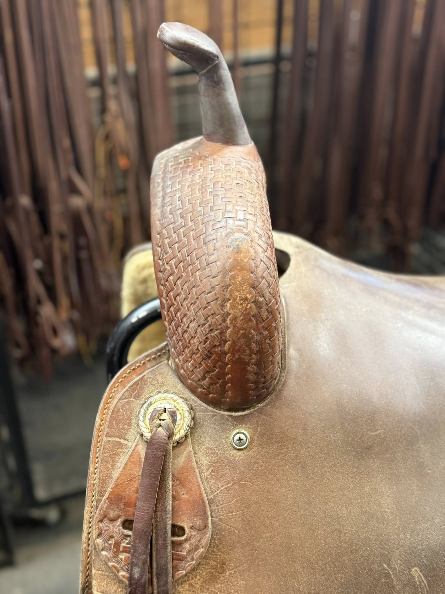
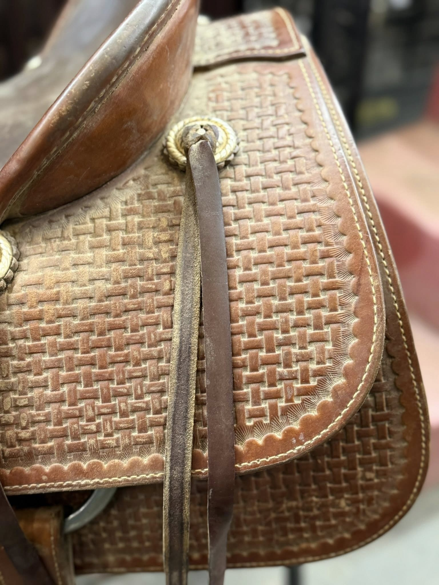
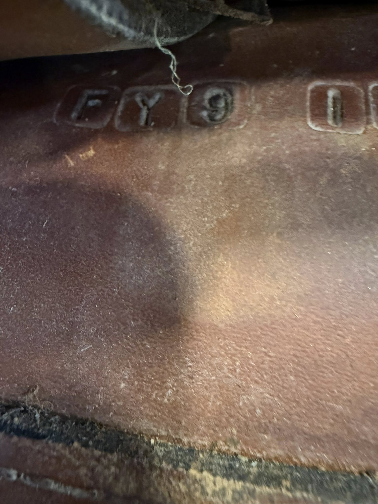
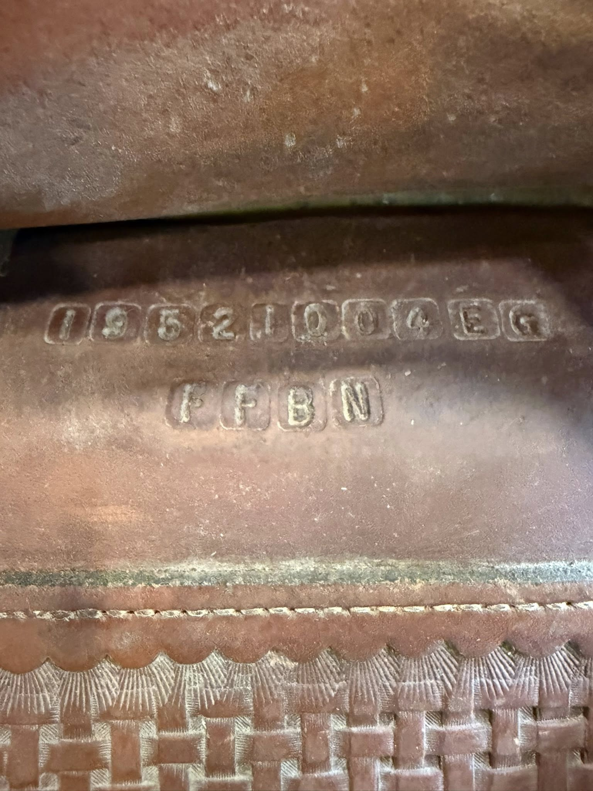

Roohide Reiner — 17" Seat
$2,995
| Maker | Roohide |
|---|---|
| Seat Size | 17" |
| Tree Width | Contact for fit details |
| Serial | 19652100 4BG / FFBN |
| Tooling | Basketweave throughout |
| Hardware | Gold rope-edge conchos |
| Condition | Well-used, honest patina |
This Roohide Reiner carries the serial number 19652100 4BG with FFBN tree code stamped inside. The 17-inch seat makes it a comfortable fit for a wider range of riders, and the full basketweave tooling is clean and well-defined throughout the swell, fender, and skirt panels. Gold rope-edge conchos add a classic western touch. The leather shows honest use consistent with a working reiner — good structural integrity throughout.
Tree width details are available on request — contact David directly to discuss fit for your horse.
Shipping available. David ships nationwide. Contact for a quote to your zip code.
Inspected & certified by David Solum — 40+ years in reining saddles
Inquire About This Saddle